Lost Poems Stolen Poems
Chapbook (16 pages)
4 x 8.5"
2015
I became interested in the way 'lost' and 'stolen' are activated by the presence of objects, and the fact that they represent extremes on a single spectrum of ownership. This chapbook is a collection of lost listings from Craigslist (unchanged, and composed into lines) and contours of stolen paintings and artifacts (composed into arrays), which I postulate are and present
as poems.
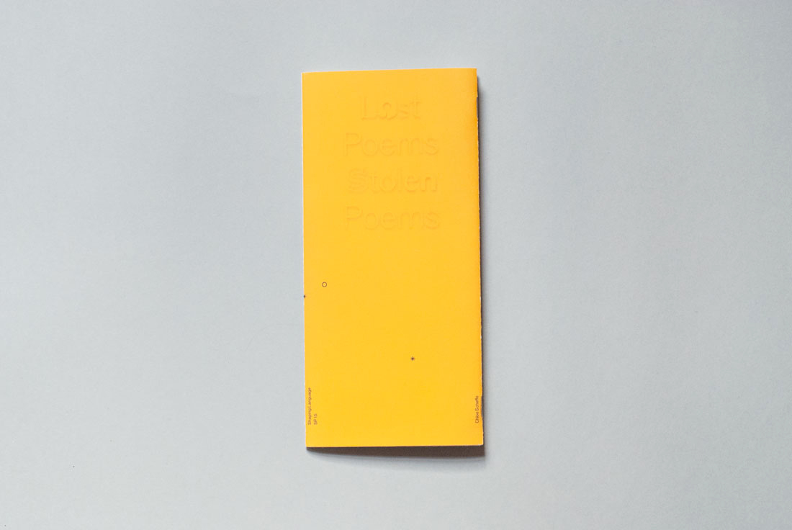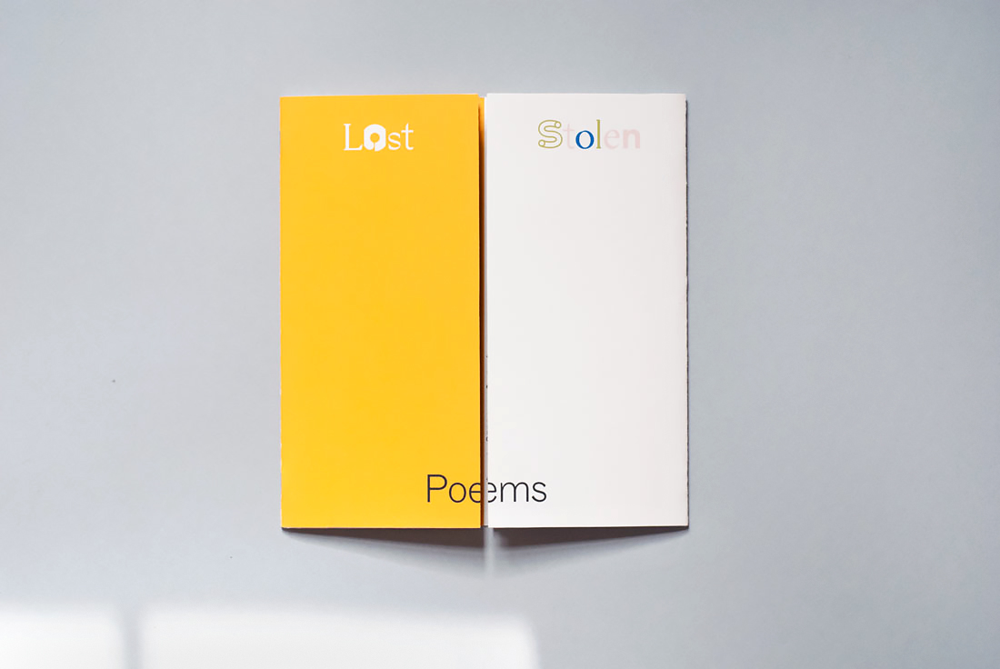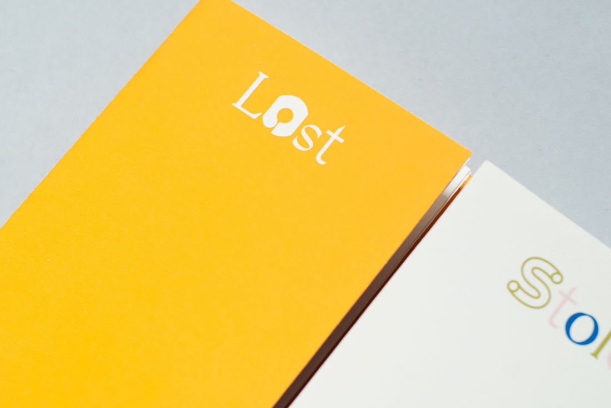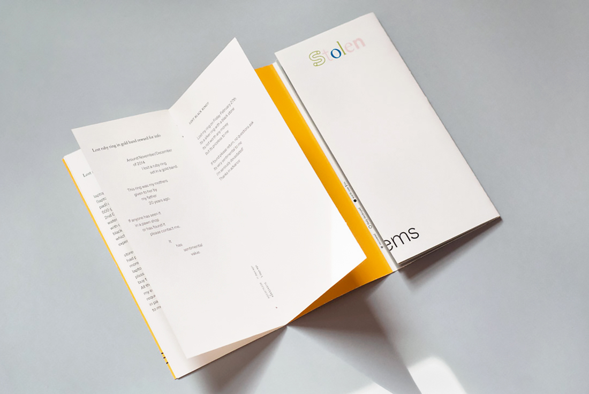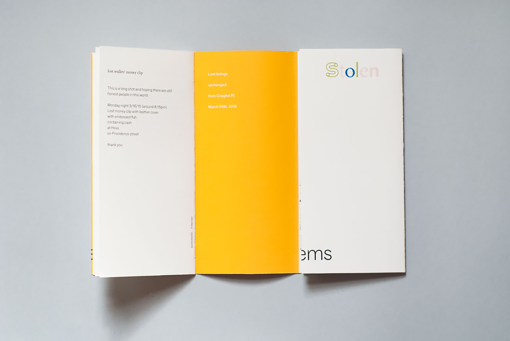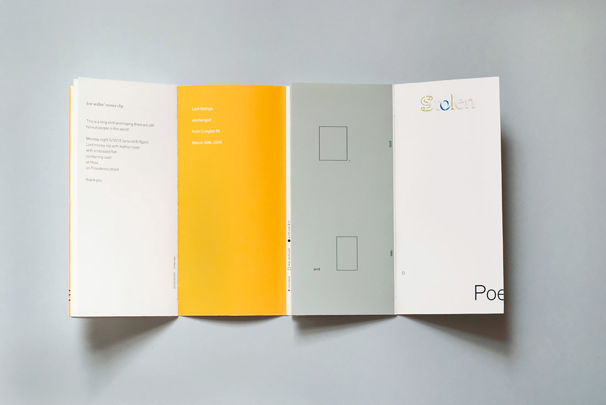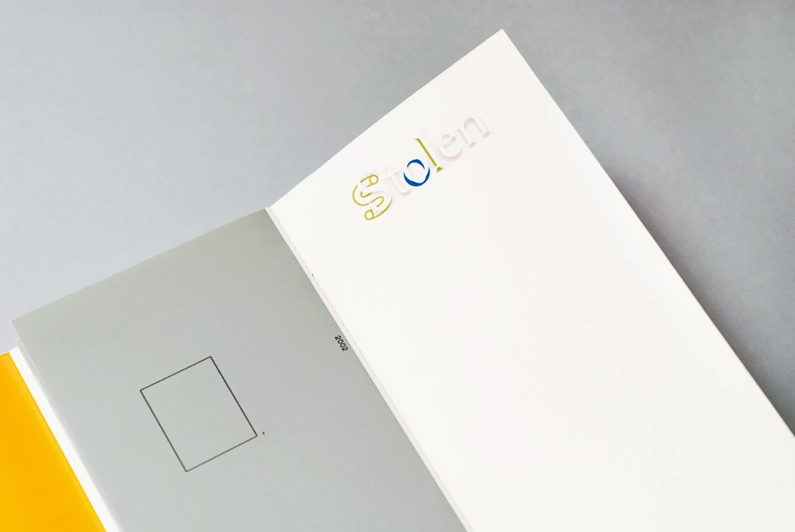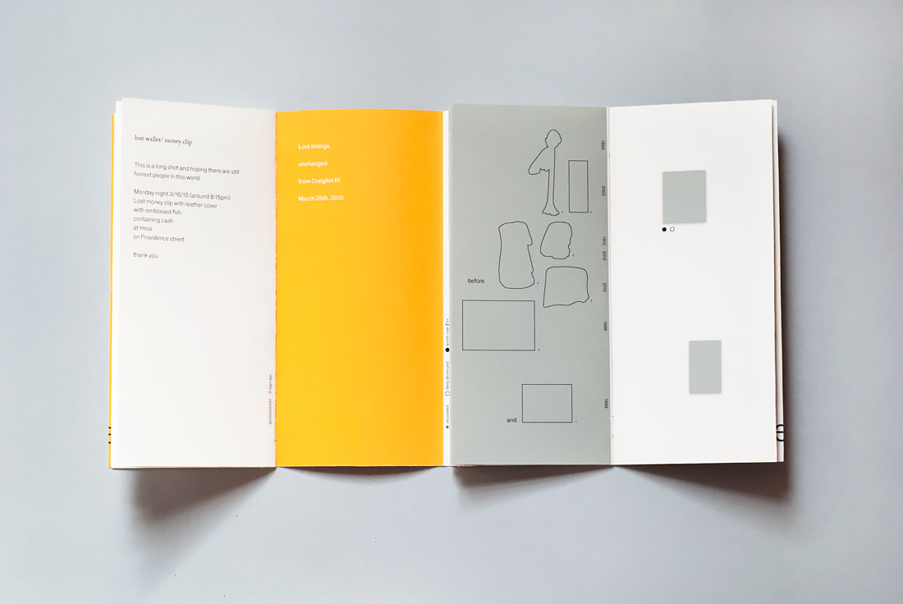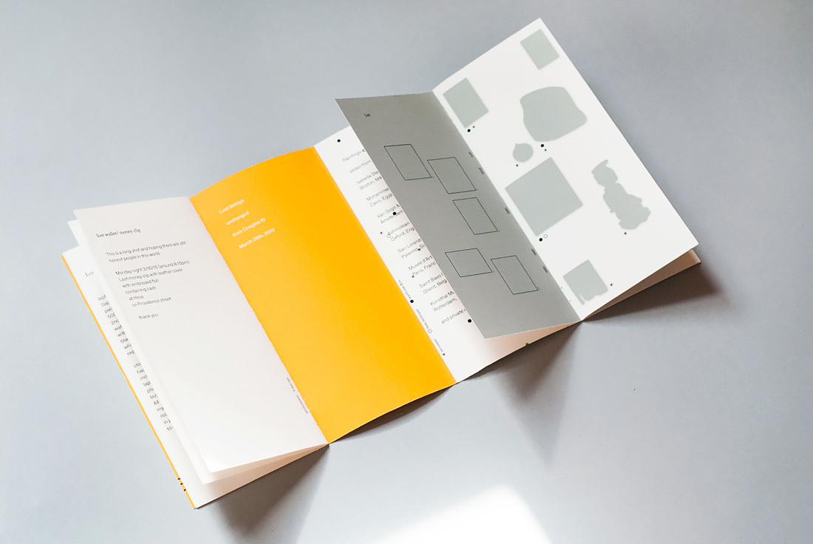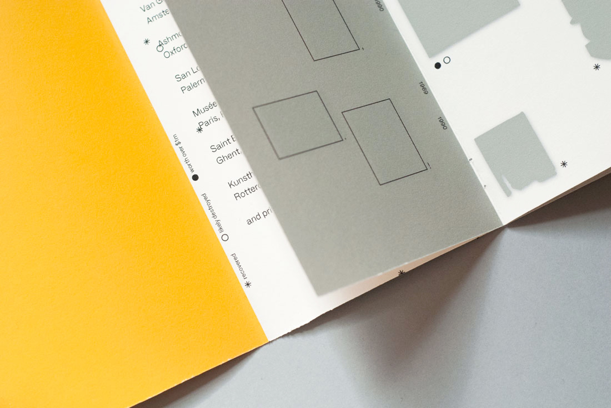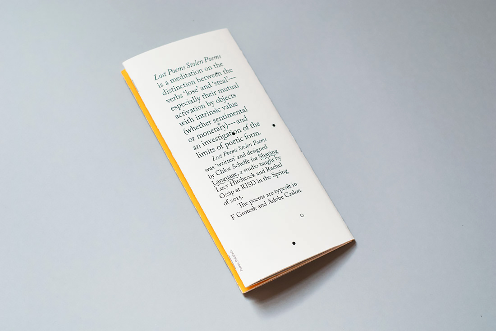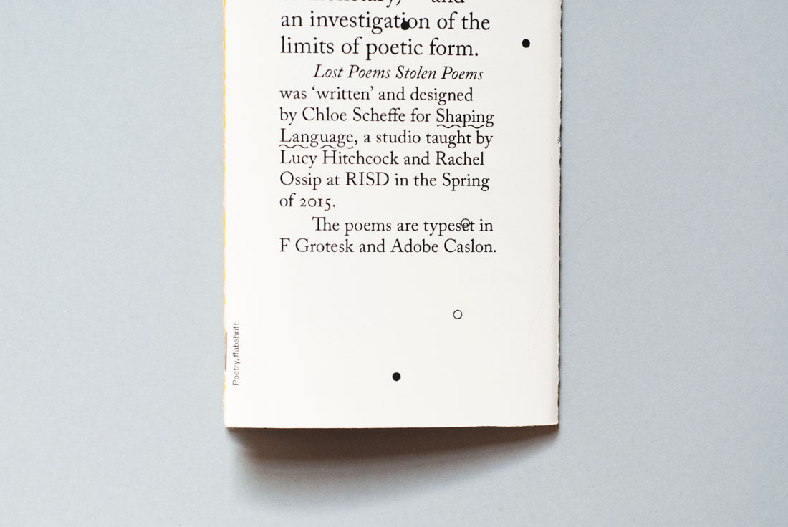